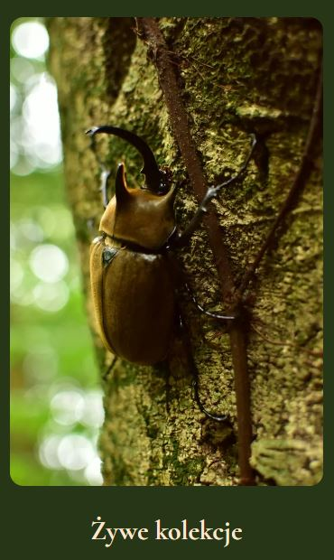
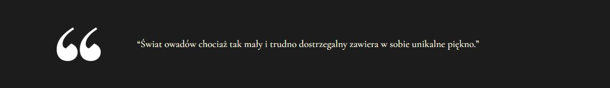

Website build with Wordpress
King Beetle is not a commercial project. The website was created to demonstrate my skills in using Wordpress Gutenberg. The topic of the website is the sale of services and goods related to entomological models.
Website contains a functioning e-mail contact section. King Beetle is responsive on mobile devices. I used Astra theme with the use of several plugins such as: Spectra, Antispam Bee, Converter for Media, Cookie Notice & Compliance for GDPR / CCPA, LiteSpeed Cache... and several others. A blog created to inform the user about important events and for better positioning of the website. Website has a very good performance and SEO rating.